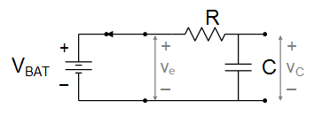

Para un circuito resistor-capacitor, donde el capacitor tiene un voltaje individual Vr = V0,
el voltaje disminuira exponencialmente de acuerdo a la ecuacion:
v(t)=V0e^-t/RC
El circuito se puede representar en 3 estados diferentes
El nodo de entrada Ve del circuito RC esta conectado a traves de un interruptor a la terminal negativa de la bateria.
Queremos saber que pasa con Vc, el voltaje en el capacitor, cuando subimos y bajamos el interruptor.
Comenzamos nuestro anaalisis al determinar el estado inicial del circuito, antes de que algo cambie.
Con el interruptor hacia abajo, podemos dibujar el siguiente circuito equivalente,
donde Ve es igual a 0 volts y el lado izquierdo de R esta conectado a la parte inferior de C.
Supongamos por el momento que el circuito lleva mucho tiempo en este estado, de tal manera que cualquier carga almacenada en el capacitor ya se haya drenado a traves del resistor; asi, qC = 0.
De este hecho, sabemos que el voltaje a traves del capacitor debe ser de 0 volts, pues Vc = q / C = 0 / C = 0v
Como a traves del capacitor hay 0 volts, tampoco hay voltaje a traves del resistor, por lo que la corriente que fluye por R (y la corriente que fluye por el capacitor) debe ser igual a 0 amperes.
Decimos que el circuito esta en estado estacionario, en reposo o en equilibrio. Hemos respondido la primera pregunta,
Ahora subimos el interruptor. El voltaje Ve se vuelve Vbat.
